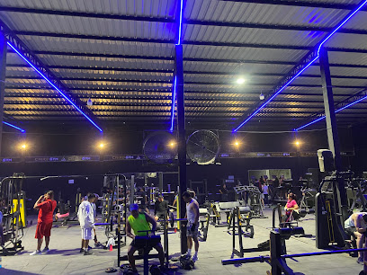

Actividad física y bienestar
La actividad física contribuye al bienestar físico y mental
y puede incorporarse a la rutina mediante distintas alternativas,
como caminar, practicar deportes o entrenar en un gimnasio.
Este sitio reúne información sobre sus beneficios y explora
hábitos y preferencias relacionados con el ejercicio en la comunidad.

La práctica regular de ejercicio puede mejorar la condición
cardiovascular, fortalecer los músculos y contribuir al bienestar
emocional. Sus beneficios dependen de factores como la frecuencia,
la intensidad y las características de cada persona.
Conocer los motivos para hacer ejercicio, la frecuencia de
entrenamiento y los horarios preferidos ayuda a comprender
cómo las personas incorporan la actividad física en su rutina.
En la sección Comunidad se presentan los resultados de una encuesta.
Alternativas para
hacer ejercicio
Existen diferentes formas de mantenerse activo: caminar,
montar bicicleta, practicar deportes o realizar ejercicios
en casa. También es posible acudir a espacios especializados,
según los intereses, las posibilidades y los objetivos personales.
Cairo Gym es un establecimiento relacionado con la actividad
física en Guayaquil. Se incluye como referencia local para
ilustrar una de las alternativas disponibles para quienes
buscan realizar entrenamiento en un gimnasio.